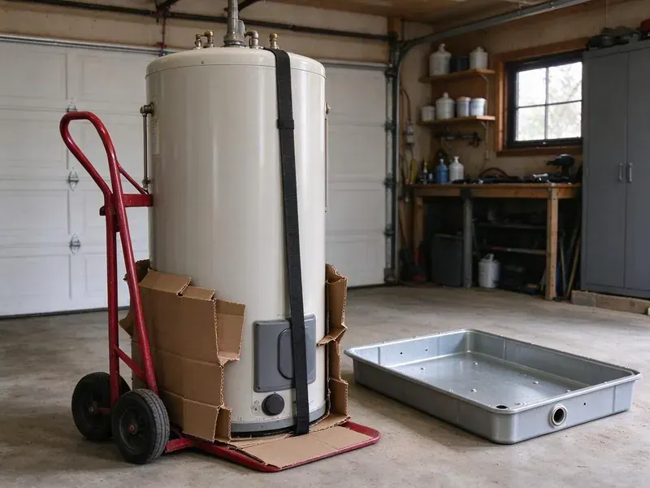

Basement Sump Pump Installation in Tiverton, RI
JPN Plumbing cuts the slab, sets the liner and connects the pump to a protected outlet for basements in Tiverton, RI.
- Cast Iron Pumps On the Truck
- Written Prices Up Front
- Flat-Rate Pricing
- Pits Cut Through the Slab

Beat the Next Storm in Tiverton, RI
The liner, pump, check valve and PVC come with us, so most jobs finish in one visit.
Sump Pump Installation for Tiverton, RI Homes With Lower Levels
JPN Plumbing has installed sump pumps all over Rhode Island, and the weather sets the workload. Cold winters and humid summers give Rhode Island plumbing a full range of seasonal stress over the course of a year. A pump that sits idle for months still has to start on the first call, so we pick switches and check valves that hold up through long idle stretches. Cast iron, not plastic.
Our expertise includes:
- High-capacity pumps for heavy groundwater
- Battery backup installation and testing
- Slab saw cutting and pit excavation through hardpan and clay

Additional Plumbing Installation Services in Tiverton, RI
We install water heaters, pumps, lines, and fixtures across Tiverton, RI with careful, permitted work that passes inspection the first time.


Customers
Why Choose JPN Plumbing for Basement Sump Pump Installation in Tiverton, RI?
Code compliance is the floor, not the goal. Each install meets the local plumbing and electrical rules, including a dedicated GFCI-protected receptacle within reach of the pump cord and a discharge that never ties into the sanitary sewer. Inspectors rarely flag our work.
- Flood Prevention, A pump that starts on time keeps an inch of water off your floor.
- Local Knowledge, We know how Tiverton lots drain in a hard storm.
- Correct Sizing, We figure gallons per hour at your real discharge height instead of reading the box.
Citywide Coverage
From the edge of town to the center of Tiverton, our trucks are stocked so the job finishes in one visit. We carry liners and check valves with the pumps, plus a bag of concrete mix for patching the slab around a new basin. Return trips are rare.
Experienced Team
Pedestal pumps, submersibles, battery backups and duplex panels are all routine for our team. They stay current on new switch and alarm designs, because a pump is only as good as the switch that tells it to start, and switch failure is still the most common reason a basement floods with a working motor sitting in the pit. Switches fail first.
Safety-First Approach
Local building codes govern discharge location, pit lids and electrical work, and we follow them on every job in Tiverton, RI. Permits get pulled when the job requires one, and we leave the paperwork with you. Inspectors see clean work.
Trusted Certified Tiverton Plumbing Services Professionals
At JPN Plumbing, we take pride in licensed, certified plumbing services throughout Tiverton, RI. Credentials matter in this trade. Our plumbers hold recognized industry credentials, and they follow strict safety and quality rules on every repair, installation and maintenance call we run.
Call Us Now PHCC Plumbing Contractor Recognition
PHCC Plumbing Contractor Recognition Better Business Bureau (BBB) Accreditation
Better Business Bureau (BBB) Accreditation Angi Certified Pro
Angi Certified Pro ISO 9001 Quality Management Certification
ISO 9001 Quality Management CertificationBasement Sump Pump Installation Services in Tiverton, RI
Sump Pump Alarms and Smart Monitoring in Tiverton, RI
High water alarms cost little and buy you time. A standalone unit screams when water rises above the pump float, while a Wi-Fi monitor sends a text if the level rises or the power drops, which homeowners who travel tend to like. We test it in front of you.

Sump Pump Installation Cost Comparison in Tiverton, RI
Pricing starts with whether you already have a pit. A pump swap in an existing basin costs the least, while a new pit adds saw cutting, digging and a concrete patch, and a battery backup adds the second pump and battery on top of that. We itemize every quote.
High-Capacity Sump Pump Systems in Tiverton, RI
Some lots sit in a high water table and fill a standard pit every few minutes during spring. For those, we step up to a 1/2 or 3/4 horsepower unit in a bigger basin, all sized after we time how fast your pit refills. We use a stopwatch.
Sump Basin and Discharge Line Installation in Tiverton
The basin sets the ceiling on what the pump can do. We place it at the lowest point of the floor, bed it in washed stone, and run the discharge line with a slight pitch to the exit point so nothing sits in the pipe in Tiverton. Water should never come back.
Same-Day Sump Pump Installation in Tiverton
Same-day emergency installs cover pumps that quit in the middle of a storm. First we get the standing water out of the pit, then set a new pump on a new check valve, plug it into a tested GFCI outlet and watch it run through several cycles before leaving your Tiverton basement. A backup is the next conversation.
Emergency Sump Pump Installation in Tiverton, RI
A dead pump with water rising in the pit is a same-day call. We send a plumber with a cast iron pump on the truck, pulls the old unit, checks whether the float or the check valve caused the failure, and gets water moving again in Tiverton, RI. Keep a wet vac running until then.
Sump Pit Installation in Tiverton, RI
Pit size controls how often the pump starts. Too small a pit means the pump short cycles in heavy flow, so we usually install an 18 by 22 inch or 18 by 30 inch basin with a solid bottom and perforated sides wrapped in filter fabric. Fewer starts mean a longer life.

Commercial and Multi-Unit Sump Installations in Tiverton
Duplex systems with two pumps and an alternating panel are standard for parking garages and multi-unit buildings with below-grade levels in Tiverton. The panel swaps the lead pump every cycle, so wear stays even. A high water alarm alerts building staff. We coordinate the wiring with your electrician.
Basement Sump Pump Installation Near Me in Tiverton, RI
Our trucks cover all of Tiverton and the nearby suburbs. A pump swap in an existing pit is usually done in a few hours, and new pits that need slab cutting and a concrete patch generally take most of one day from start to cleanup. The concrete chunks leave with us.
Typing sump pump installation near me into a phone in Tiverton, RI gets you a long list. Ask each company if they measure vertical lift, whether they install a check valve, and whether the discharge will end at least 10 feet from your foundation. We do all three.
JPN Plumbing at a Glance
- Licensed and insured plumbers serving Tiverton, RI
- Same-day appointments and 24/7 emergency response
- Clear written estimates, no hidden fees
- 4.8-star rated by 684+ Rhode Island customers
Tiverton Map
Tiverton Information
- Population
- 7,809
- Area codes
- Local
- Service area
- Tiverton and towns within a 40 mile drive
- Nearby
- Newport East, Warwick, East Providence, Newport
Basements are standard in most homes, and many rely on sump pumps to manage groundwater during wet seasons. In Tiverton, RI, a properly matched pump lifts that water out of the pit and sends it far enough from the wall that it does not come straight back.
Expert Services
Call JPN Plumbing for honest, reliable plumbing from people who know the trade in Tiverton, RI.
Our Specialized Plumbing Services in Tiverton, RI
At JPN Plumbing, we handle the full list of plumbing services across Tiverton, RI. From leak detection to full system installs, our team works fast and charges fair prices on homes and commercial properties alike. Take a look at our core services below:


How We Install Basement Sump Pumps in Tiverton, RI
The process is simple, and we explain each step as we go.
Request a Quote
Call (401) 364-2507 to book a visit with JPN Plumbing. You get a written, itemized quote before any work starts.
Site Assessment
We look at the layout of your Tiverton basement, the floor drain and any existing drain tile, then pick the pump and pit size that fit.
Professional Installation
We do the whole job, from excavating the pit to setting the pump and connecting the discharge, all to local Rhode Island code.
Frequently Asked Questions About Basement Sump Pump Installation in Tiverton
Replacing a pump in an existing pit usually runs $500 to $1,200 including the pump and check valve. A brand new pit through the slab falls between $1,500 and $3,500, and a battery backup adds roughly $600 to $1,500. The backup is a common add.
A straight pump replacement generally goes without a permit. New pits, new discharge routes and new circuits may, so we check the local rules and pull permits when they apply.
Mostly cast iron pumps from Zoeller, Wayne, Liberty Pumps and Little Giant. All four have parts at local supply houses, which matters when a switch fails on a Sunday and you want the pump running again without waiting a week for an order to ship. Common models ride on our trucks.
Most standard installs finish within 4 to 8 hours. Long discharge runs or a new pit can add several hours, and if we need a new circuit from the panel, an electrician may need to come out the same day, which can push the job into the evening. The timeline comes with the quote.
For some homeowners, a same-model pump swap is a fair weekend job. Cutting a new pit or adding a backup is not, because those mistakes end in flooding, cracked slabs or electrical hazards, and fixing them costs more than paying for the install up front. Leave those to us.
A primary pump does the everyday work. A secondary pump, often on a battery, waits in the same pit, and it kicks on if the primary fails, loses power, or gets overwhelmed by more water than it can move during a heavy storm. Two pumps, two check valves.
We strongly recommend professional installation. The job combines electrical, plumbing and concrete work, and a bad seal on the lid, an undersized pit or a discharge that drains toward the house can leave you worse off than having no pump at all. Mistakes show up in storms.
Discharge belongs in the yard, a dry well, or an approved drainage area at least 10 feet from the foundation. Tying a sump pump into the sanitary sewer is not allowed in most places, and it can draw a fine.
What People Are Saying About Our Plumbing Experts?

Nathan E.
Our tankless heater kept throwing an error code and shutting off mid shower. The tech flushed the heat exchanger, which was full of scale, and replaced a bad flow sensor. Hot water has been steady for half a year now.
Water Heater Repair · Tiverton, RI
Monica A.
Our water bill nearly doubled in one month with no change in how we used water. The tech checked the meter, heard the leak under the hallway with his equipment, and opened a hole about a foot square. Fixed the same day.
Slab Leak Repair · East Providence, RI
Robert G.
The camera showed a full break in our clay sewer line near the street. JPN Plumbing replaced it with a trenchless pipe burst, so the only digging was two small pits in the yard. They let us watch the footage before and after.
Sewer Line Replacement · East Providence, RI
Karen W.
After our third pinhole leak in copper, we stopped patching. JPN Plumbing gave us a written plan room by room and repiped the house in PEX while we stayed in it. The crew covered our floors every morning and cleaned up every night.
Repiping · Newport East, RILaura S.
Our 40 gallon tank started leaking from the bottom after thirteen years. The tech hauled the old one out, set a new unit with a fresh expansion tank, and had hot water running in about four hours. He took the old tank with him too.
Water Heater Replacement · Tiverton, RIJames P.
Our restaurant had a slow leak at the hand sink that was rotting the cabinet base. JPN Plumbing came in at six in the morning before prep, replaced the trap and both supply lines, and was packed up before my first cook clocked in.
Commercial Plumbing · East Providence, RI